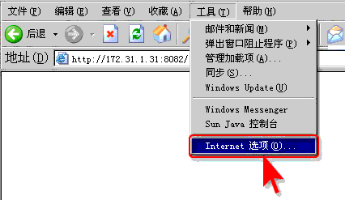
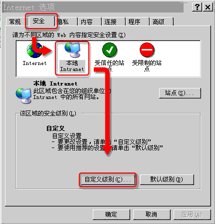
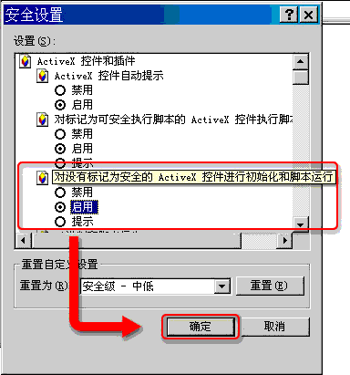
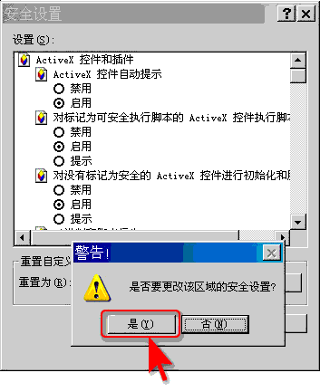
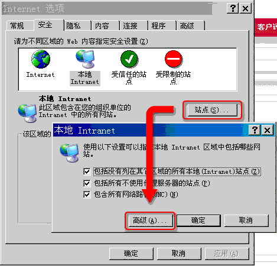
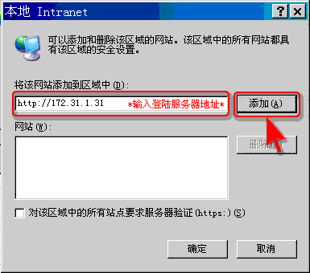
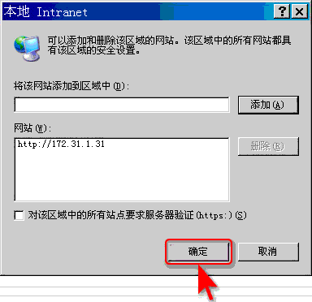

设置更改说明
当您打开此页面说明您的IE浏览器页面安全设置不符合要求，请您按照图示说明更改安全设置。
>>1.首先打开IE浏览器菜单栏内的“工具>Internet选项”

>>2.接着在打开的页面中选择“安全>本地Intranet>自定义级别”

>>3.将“对没有标记为安全的ActiveX控件进行初始化和脚本运行”的默认“禁用”改为“启用”，点击确定。

>>4.在弹出选项中选择“是”。

>>5.接着点击“站点”按钮，在弹出页面点击“高级”按钮

>>6.在弹出页面输入框输入登陆服务器地址，并点击“添加”按钮。

>>7.最后点击“确定”按钮，完成设置更改。重新登陆，成功。
